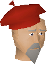
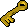

In this release
Your bot can now tell you when something goes wrong, even when you're away from your PC. New players get a short tour of the client, Quest Helper auto-play gets through quests it used to get stuck in, and the walker stops trying the same locked door over and over. This release ships Microbot client 2.6.37 (on RuneLite 1.13.3) together with updates to three Hub plugins.
Bot alerts
Say you leave Guardians of the Rift running and go to work. An hour later the client freezes, or the game logs you out and nothing logs you back in. Until now you only found out when you got home. With bot alerts, microbot.cloud sends you a Discord message or an email when:
Link your client in one click
Open the new Microbot Cloud panel from the Microbot sidebar button, or go to Microbot settings > Bot alerts, and click Link to Microbot account. Your browser opens the dashboard with a code like K7QF-2M9D. Sign in, check that the code matches and approve. The client says "Linked as Microbot client", and you can rename it on the dashboard, for example to "Main PC".
Choose where alerts go, Discord or email, on the dashboard's Alerts page. Clients started from the launcher while you're signed in are linked automatically.
Only the plugin names that are running, whether a break is active, and the error text with names, paths, emails and secrets removed. Your RuneScape or Jagex account name is never sent. If you turned telemetry off, alerts stay off too.
A tour for new players
The first time you start Microbot, a short tour shows where everything is: the sidebar, your plugins and their on/off switches, the Plugin Hub, profiles, Antiban, Inventory Setups and Microbot Cloud. Skip it with Not now and it comes back next start, up to three times. Choose Don't show again and it stays away. You can replay it any time from the red bug button.

The red bug button in the right-hand toolbar replaces the old help menu. It copies diagnostics for a bug report (without account names, chat, tokens or file paths), can start Microbot once in safe mode, and links to Discord and GitHub.
Quest Helper auto-play
We ran auto-play through Misthalin Mystery from start to the final puzzle and fixed every place it got stuck:
 Boarding the rowboat in Lumbridge Swamp: auto-play kept walking on the spot because it checked whether it could stand on the boat itself. It now checks the tiles next to the boat, and clicks the boat where the game expects.
Boarding the rowboat in Lumbridge Swamp: auto-play kept walking on the spot because it checked whether it could stand on the boat itself. It now checks the tiles next to the boat, and clicks the boat where the game expects.- Watching through the trees: the scene asks "Interrupt with answer?". Auto-play used to close it and replay the scene forever. It now says nothing and lets the scene finish.
 Playing the piano: steps where you click on an interface crashed on every tick. They work now.
Playing the piano: steps where you click on an interface crashed on every tick. They work now.
Steps where you can talk to either of two NPCs, like "Talk to Will or Anne" in Pandemonium, no longer swap between them. Auto-play sticks with the NPC it clicked until the conversation ends.
Walker: locked doors and transports
In Misthalin Mystery the walker picked a route through a door you need a key for. It clicked the locked door, nothing opened, and it kept clicking for 11 minutes before it went another way.

Clicks the locked door again and again, for minutes.
After a few tries it marks the door as blocked for that walk and takes another route.
When a transport on your route, like a canoe or spirit tree, couldn't be found nearby, the walker used to check every remaining tile of the route for it. It now stops after the first check and plans again.
Plugin updates
Leaves the large mine on time at the start of a game instead of mining until 100 fragments. After crafting, it uses the fragments you already have instead of going back to mine. Portals are taken as soon as they appear, and the essence limit now counts only guardian essence, not every item in your inventory.
If a brother attacks you in the tunnels and stops your walk, the plugin plans a new path to the chest on the next tick instead of standing still at a door. With no prayer points left, it waits for the prayer potion to take effect before turning on protection, so you no longer fight a brother unprotected.
With prayer flicking on and two melee monsters hitting on the same tick,  Protect from Melee was clicked twice, which turned it off right before the hits. It's now clicked once.
Protect from Melee was clicked twice, which turned it off right before the hits. It's now clicked once.
Client
- Right-click the log console for Copy, Copy all, Select all and Clear, so you can paste a log into Discord without fiddling with Ctrl+C.
- Clicks and key presses now look like a person's: the mouse button is held for a moment instead of zero milliseconds, each typed letter is pressed and released, and clicks never land in the top-left corner of the screen. Prayer flicks still fit easily inside a game tick.
- Passwords, bank PINs and tokens are hidden in debug logs, so a log you share can't leak them.
- When the client freezes, it sends the last part of its log, with names and paths removed, so we can see what caused it. Background checks for the bank tutorial and membership pop-ups no longer pile up while the game is busy.
- Includes RuneLite 1.13.3 (Microbot 2.6.36).
How to update
Restart Microbot to pick up client 2.6.37. Plugin updates show up in the Microbot Hub panel inside the client. Something not working? Tell us on Discord.
Game images © Jagex Ltd., via the Old School RuneScape Wiki.